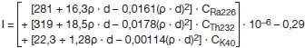

Unter Berücksichtigung der Baustoffflächendichte ρ · d mit der Baustoffdichte ρ in der Einheit Kilogramm je Kubikmeter und der Baustoffdicke im Bauwerk d in der Einheit Meter mit den spezifischen Aktivitäten der Radionuklide Radium-226 CRa226, Thorium-232 (oder seines Zerfallsprodukts Radium-228) CTh232 und Kalium-40 CK40 im Baustoff in der Einheit Becquerel pro Kilogramm ergibt sich der Aktivitätsindex I zu:

Überschreitet die Flächendichte ρ · d den Wert von 500 Kilogramm je Quadratmeter, so ist stattdessen in der Formel der Wert ρ · d mit 500 Kilogramm je Quadratmeter anzusetzen. Der Referenzwert in Höhe von 1 Millisievert pro Jahr gilt als eingehalten, wenn der Aktivitätsindex I den Wert 1 nicht überschreitet.
Für Dünnschichtmaterialien, also Baustoffe mit einer Dicke von bis zu 0,03 Meter, die nur in Kombination mit einer sie stützenden oder sie tragenden den Raum begrenzenden Oberfläche – Wand, Decke, Boden – verwendet werden – zum Beispiel Fliesen –, ist zur generischen Berücksichtigung der dahinterliegenden Oberfläche ein Beitrag von 0,48 zum Index zu addieren.
Ist die Baustoffdicke im Bauwerk nicht bekannt, so ist d = 0,2 Meter zu setzen.